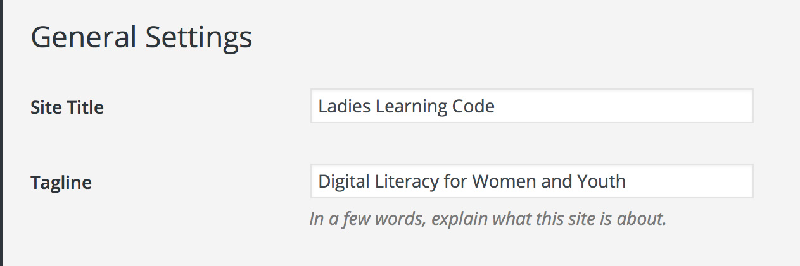
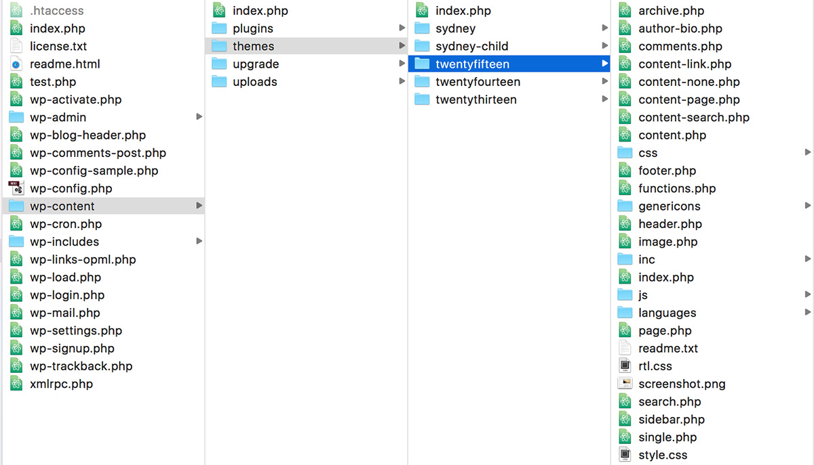

Intro to WordPress
Theme Development options
There are three options for adding themes to your WordPress site.
Option 1: Free & Premium Themes
- only pay for domain, hosting & cost of theme (from free to ~ $300)
- does not require any coding (though you still have access to the codebase)
- includes some theme options that can be updated in the WordPress admin area
Option 2: Child themes
- used to modify a theme without making any changes to the parent theme’s files
- inherits the features of its parent theme including updates
- will require some knowledge of HTML, CSS and PHP
- should develop locally using a local server
Option 3: Custom themes
- built from scratch or from a starter template
- requires a deeper knowledge of HTML, CSS, PHP or get really good at following the WordPress documentation!
- should develop locally using a local server
We’ll be sticking to Option 1 for the remainder of this lesson but there are some extra resources and information included at the end of this lesson for further exploration.
Choosing a Theme
There a many different themes to choose from with different styles. Here are some features and options to look for when picking a theme:
Responsive
Look for a responsive theme so the design can adapt to different screen sizes for various devices. A separate mobile site or mobile plugin will not be needed to resize or rearrange content for different sized screens.
Columns
Columns are basic website design elements. They allow you to display your content in chunks that are visually appealing. For example, you can have a larger main content area and a sidebar or use a layout that look like magazines and newspapers with more equal column widths.
Page Layouts
Layout determines the overall look and feel of your blog. Consider how (or if) certain content is displayed such as the site title, subheading, tags, categories, main menu, etc.
Theme support
Some themes don’t include support for certain types of content (e.g. the tagline in the previous example). When choosing a theme, you can view and test out different customization options
Configure basic site settings
In the admin panel, go to Settings > General.
Here, you can change/update your site title and tagline. You can also set your timezone, date/time format and language options here as well. Make sure to select Save Changes!
Adding content
Open a post or page and try out some of the options listed below in the editor.
When adding content into your Post or Page, the default visual editor uses a WYSIWYG editor (what you see is what you get) to format the content. Click on the Toolbar Toggle to show all of the editing options. Hover over any icon to see a short description of what each tool is used for.
When using the Visual editor, the content entered automatically gets converted into HTML.

WordPress and HTML
You can also edit or add your own HTML by selecting the Text editor tab.
In WordPress, you don’t need to add the <p> tags in either the visual or text editor. In the Visual editor, select the paragraph option from the dropdown.

In the Text editor, just ensure you return/enter twice to add a space between the paragraphs. They will automatically be converted into <p> tags via Wordpress magic!

Also, break tags <br> are also not needed. Just use the enter/return key once for a line break in either the Visual or Text WordPress editor.

Slug: Posts & Pages
A WordPress slug is a few words used to describe a post, page, category, or tag within WordPress.
In posts and pages, the slug appears in the URL and is generated automatically based on the title. It can be changed manually to something different from the title but it’s best to keep them simple and relevant.
Select Edit to change it manually.

Slug: Categories & Tags
Slugs can also be used in categories and tags and are also automatically generated.
Note that the WordPress.com version does not have an option to manually update the slug for categories and tags but the WordPress.org version does.
Slugs can be found under the Post > Categories and Post > Tags menu.
Though your tag & category names can contain spaces and special characters, it will be converted to a dash for the slug to make it URL friendly.

Default Home page settings
WordPress includes many core files to make this framework run. The theme related files include php template files that are used to determine how and where to display certain types of content. These template files are also used to display just a specific portion of a page.

Based on this template hierarchy, by default, a chronological listing of your blog posts will show as your home page. To change that, you’ll need to make sure you have a Page to set as your home page and another Page for your blog.
To update these settings, follow these steps:
- If you don’t already have a page to use as your home page, create one
-
Create a blank blog page
This page does not need any content because there is already a template file used to display the blog post listing.
Creating this blog Page will create a url/permalink to point the blog page to similar to:
http://yoursite.com/blogorhttp://yoursite.flywheelsites.com/blog/if using the Flywheel demo site. -
Change the settings
Under Settings > Reading, select whichever page you want to show as the Front page (your homepage) and the blank page you created for the blog under Posts page.

Create a custom menu
Menus are a list of links, usually displayed as the navigation for your site. You can choose from Pages or Categories from within your WordPress site or a custom link (can link to an external site).
The menu location may vary depending on the theme. Some themes also offer additional menus such as social links menus.

You can also reorder the menus by dragging the menu options as well as make submenus by dragging it underneath another item.

Changing themes & menus:
If you change your theme, you may have to go back to your Appearance > Menus to add in the Menu Settings in again.

Editor menu
The Editor menu (Appearance > Editor) allows access to the theme files where you can add edits to the template files.
Be careful when editing these files.
Normally, it would be best practice to edit these files locally so any changes made won’t be “live” before it’s ready but since the Flywheel demo site is password protected, the general public won’t be able to view it.
Pro tip! Make a backup copy of the file before editing it in case you need to put it back!

Template tags
WordPress uses template tags to pull data from the database and output it onto the page. It is often mixed in with HTML so the data can be outputted into semantic HTML page layouts.
Template tags are basically PHP functions (and look similar to JavaScript functions.) Note that WordPress (and most PHP developers) use the underscore naming convention and looks something like this:
template_tag()
Here’s a couple of common template tags:
get_header() - gets the header.php file and includes it in the current theme file
the_title() - tells WordPress to get the title of the page or post from the database
How do the template tags work? This example below shows how the site tagline could be outputted on to the page, into ann h2 heading.
bloginfo('description') will get the Tagline value, from the database. The value is whatever you entered in your General Settings.
<h2 class="site-tagline"><?php bloginfo( 'description' ); ?></h2>

Bonus: Local WordPress Theme Development
Developing a WordPress theme locally requires downloading the WordPress core files and setting up a local server.
WordPress Core Files
The core files can be downloaded here: https://wordpress.org/download/
Though you can access all of these files, there are some that should never be edited. The majority of your edits will be contained in the wp-content folder since those files are specific to the WordPress theme.
The one file outside of wp-content that you may need to edit is the wp-config.php file. It contains the website’s base configuration details, such as database connection information.

Setting up your local server
There are many ways to set up a local server. Here are the instructions for using the DesktopServer App:
- Download the DesktopServer app here: https://serverpress.com/get-desktopserver/
- View the video for downloading and installing the DesktopServer app: https://www.youtube.com/watch?v=d_MoCUKv3TI
- Open the DesktopServer app and follow the steps outlined in the getting started video (https://www.youtube.com/embed/Po0MkaL8Fgc) or using the written instructions here.
- Once you’ve created a local WordPress site, you can access it with the Sites button.
Another popular option is the Mamp app.
Important! You will need to run a local server anytime you’re developing WordPress locally.